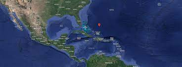
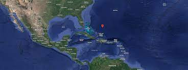

A Bermuda háromszög
Talán az egyik leghírhedtebb megfejtetlen óceáni rejtély a Bermuda-háromszög. Az Atlanti-óceánban található Bermuda-háromszög régóta összeesküvés-elméletek és rejtélyek forrása. Magának Kolumbusz Kristófnak is megvolt a maga találkozása a háromszög furcsa természetével, amikor az iránytű szabálytalan leolvasásáról jegyezte fel, és arról, hogy egy "nagy tűzlángot" látott a tengerbe csapódni, ami legnagyobb valószínűséggel egy meteor lehetett. A modernebb időkben számos megmagyarázhatatlan baleset kísértette a Bermuda-háromszög legendáit. 1945-ben az Amerikai haditengerészet öt bombázójának iránytűje hibásan működött a terület felett repülés közben, és kénytelenek voltak leszállni a tengerre. Ugyanezen a napon egy mentőrepülő is eltűnt. Egyik repülőgépet sem fedezték fel újra.
 

A felfedezetlen rejtélyek
A tehetséges tudósaink fejlett technológiával már képesek voltak fényképet készíteni a fekete lyukakról, űrhajókat küldeni holdunk sötétebb felére, de még egy járművet is eljuttattak a Mars-ra. Viszont hova ez a sok feldedezés, hiszen lassan már majdnem hogy többet tudunk a minket körülvevő dolgokról, mint a saját élőhelyünkről, a földről, és annak óceánjairól. Vizenk mindössze 20%-át fedeztük fel, míg a többi mind egy rejtély marad. Ennek a tudósok szerint 2 oka van. A kevés információ ami jelenleg rendelkezésünkre áll a vizek mélységének veszélyeiről, és a víz egyre növő nyomása, minél lejjebbre jutunk. "Szinte már könnyebb a csillagok közé küldeni egy embert, mint a víz mélységeibe vetni őket", Mondta a NASA egyik kutatója. A tengerszint alatt 12 km-el akár 1000x-ére is nőhet a nyomás, mint a felszínen. Amíg nem fejlődik a technológiánk nagyobb szintre, lehet, hogy soha nem tudjuk meg, hogy mi lakozik a rémisztő és hideg feketeségben.

BEVEZETÉS
A a 10-11. századokban kezdődött a középkori Földközi-tengeri kereskedelem fellendülése,és a csaták a kalózokkal és a városállamok ütközetei egymással. A kalóztámadások és a szomszéd kikötők támadásai rákényszerítették az itáliai kikötővárosokat, hogy erődített kikötőket és hadihajókat építsenek. A kikötőkből alakultak ki az itáliai kereskedő városállamok, a thalassokráciák. Az elnevezés a tengeri hatalommal rendelkező és távoli -nem egyszerű cserekereskedelmet, hanem- lánckereskedelmet végző városállamokat jelent, például Velencét és Genovát, Pízát, Amalfit, korábban a föníciaiakat. A katalán-aragon koronának voltak területei Itáliában, Nápolyban is.
BEVEZETÉS
A a 10-11. századokban kezdődött a középkori Földközi-tengeri kereskedelem fellendülése,és a csaták a kalózokkal és a városállamok ütközetei egymással. A kalóztámadások és a szomszéd kikötők támadásai rákényszerítették az itáliai kikötővárosokat, hogy erődített kikötőket és hadihajókat építsenek. A kikötőkből alakultak ki az itáliai kereskedő városállamok, a thalassokráciák. Az elnevezés a tengeri hatalommal rendelkező és távoli -nem egyszerű cserekereskedelmet, hanem- lánckereskedelmet végző városállamokat jelent, például Velencét és Genovát, Pízát, Amalfit, korábban a föníciaiakat. A katalán-aragon koronának voltak területei Itáliában, Nápolyban is.
BEVEZETÉS
A a 10-11. századokban kezdődött a középkori Földközi-tengeri kereskedelem fellendülése,és a csaták a kalózokkal és a városállamok ütközetei egymással. A kalóztámadások és a szomszéd kikötők támadásai rákényszerítették az itáliai kikötővárosokat, hogy erődített kikötőket és hadihajókat építsenek. A kikötőkből alakultak ki az itáliai kereskedő városállamok, a thalassokráciák. Az elnevezés a tengeri hatalommal rendelkező és távoli -nem egyszerű cserekereskedelmet, hanem- lánckereskedelmet végző városállamokat jelent, például Velencét és Genovát, Pízát, Amalfit, korábban a föníciaiakat. A katalán-aragon koronának voltak területei Itáliában, Nápolyban is.